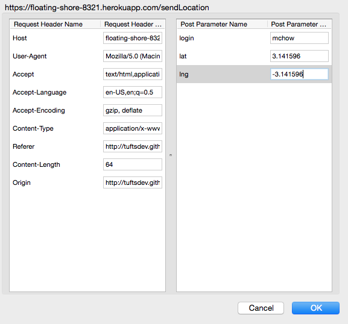

Security and Privacy Assessment of The Marauder's Map
Investigated by Gabe Terrell
Introduction
The purpose of this assessment was to look for security and privacy vulnerabilities in the The Marauder's Map front end and back end web application developed by Danielle Westerman for Comp20 assignments 2 and 3. The application's front end allows tracks the user's geolocation upon entering the webpage, sends the information to the backend, and is sent back a list of users and their locations to be displayed via a Google Map's API. The backend also provides an interface to look up a certain username to see the JSON information stored from that user and a homepage that displays all users and their information stored in the database. The current framework has several severe vulnerabilities that makes it insecure for public use. This assessment will address the vulnerabilities found and suggest fixes for each problem reported.
Methodology
To see what vulnerabilities were most dangerous, testing began using the "black-box" method -- that is, trying to find vulnerabilities without exclusive access to the backend code (i.e. trying to find vulnerabilities the way an average hacker would). These types of vulnerabilities that be discovered without access to backend code are most critical, as they can be performed with very little knowledge of the website. Tools such as curl and Data Tamper were used to test for these sorts of vulnerabilities. Afterwards, "white-box" testing of the actual back end code was performed to see if any additional vulnerabilities could be found.
Abstract of Findings
As the motto of Ming goes, "never trust user input" (x50). The primary vulnerabilities in this web application stem centrally from little verification, authentication, or filtration of user input. Users have several loop holes to submit malformed input that allow users to forge information about themselves, pretend to be another user, or directly inject code into the application that can be executed on any other user's computer when visiting the webpage (this could lead to phishing attacks, redirects to dangerous websites, or crash a user's browser). If other web applications were hoping to use the back end of the Marauder's Map framework, they would also be vulnerable to these same issues as there is not enough security in the backend.
Issues Found
Cross-Site Scripting (XSS)
- Affects POST API
- Severity: High
- This security vulnerability allows for users to directly post javascript code to the website's database that will then be retrieved by subsequent get requests. This is a massive vulnerability, as sophisticated javascript code can modify the appearance of the webpage, crash the web browser, or redirect users to dangerous websites (this could lead to phishing attacks). Hackers have an unlimited amount of code at their disposal that they can post to the site and subsequently to any users of the site.
(The above could also be implemented as a curl command in the console)
Here, a user has posted javascript code as a username. When this code is run, it alerts a message to the console infinitely. When I tested this, it froze and crashed my browser when it was executed on both the front end interface and the back end interface. If users were to experience these sorts of problems, they would never use such a product.
- Solution: User information must be filtered, as it cannot be trusted. A Javascript function could be design to replace all < characters with the phrase < and likewise change > to >. This same method can be used for other dangerous characters as well. Alternatively, a Javascript whitelist coud be used, only allowing certain characters to be accepted (i.e. the alphabet, numbers, and underscores). In this way, users cannot submit any form of html snippets that could be converted to code or CSS or redirects or any other form of malicous attack.
Information Forgery
- Affects front end webpage
- Severity: Moderate
- The current implementation of the front end hard codes a username into the HTML script, finds the user's geolocation through the browser, then sends the information through a POST request. Since the entire form is on the front end, it is very susceptible to information forgery software such as the Firefox tool Tamper Data (that was the software I used to commit the attack). While this vulnerability won't cause phishing attacks or browser crashing, it can allow for attackers to pretend to be other users or forge their location and other data. The purpose of the application is to show users where other users are located in terms of their proximity. This vulnerability prevents the purpose of the application to ever by fully trustable.

Here, a user has used Data Tamper to change his username from the one designated to him to that of another user. In addition, he has changed the location data he is sending to the server, so that it is no longer the location that geolocation found him at. This is information forgery.
- Solution: There is not necessarily an easy fix with the current system the web application is running on. The key idea to fix this is to create a level of authentication and validation on the server side. For usernames, users of the website could be required to create an account with a username and password. This way, the username would not even be part of the form being sent in the POST request. It would be tied to the account name, and the server would know the account it is serving and getting a post request from. This would bypass the ability for tamper data to mess with username as a form, because it would no longer be one. I am not entirely sure of a fix for geolocation forging, as I believe that is a common issue for many websites in the modern day. Even assuming there was a way to prevent data tamper from messing with geolocation, geolocation itself can be spoofed by a proxy server.
Security Flaw 3: TODO
- Struggling to find a third flaw -- her code was pretty solid in terms of database requests and form
Conclusion
The curent security vulnerabilities in both the front end and back end of the Marauder's Map Web application leaves it unusable in its current state. By implementing the solutions listed above, the site can become drastically more secure. The XSS vulnerability is an easy fix with a proper whitelist. User authentication can be made simple using proper frameworks, although this would require a serious overhaul of the current API. As it is, the POST API in the backend allows for a single user to input information for as many users as the person desires, and the information could be completely fabricated. This defeats the purpose of the front end application: it relies on acurate data from users. This, however, is a flaw in the design of the API itself, not security flaws in the actual implementation of the code. A further assessment of the web application's long term goals and objectives would be needed to determine the proper steps forward in remedying the flaws in the API. A follow-up consultation would cost approximately $250 to create a solid plan moving forward towards the application's long term success.